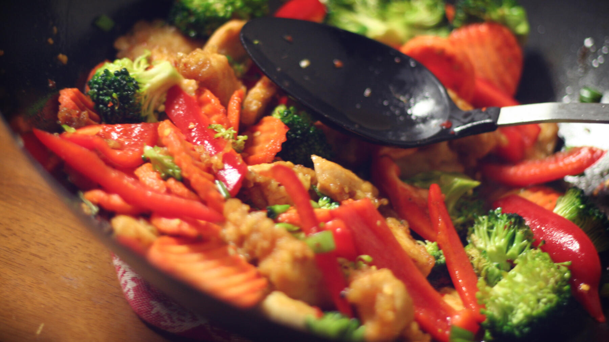

Zurück zur Übersicht
Hähnchen-Gemüse-Pfanne
Hähnchen mit Zucchini, Paprika und Champignons in einer schnellen Crème-fraîche-Soße mit Basilikum.
- Zeit
- 30 Min.
- Schwierigkeit
- leicht
- Kategorie
- Pfanne
- Ernährung
- mit Fleisch
Zutaten
Portionen
- 400 gHähnchenbrustfilet
- 1Zucchini
- 1rote Paprikaschote
- 250 gFrische Champignons
- 1Zwiebel
- 1 ZeheKnoblauch
- 100 gCrème fraîche
- 1 ELBasilikum
- 1 TLHühnerbouillon, gehäuft
- Salz, Pfeffer, Paprikapulver
- Etwas Öl
Zubereitung
- Gemüse, Pilze und Hähnchen waschen und in mundgerechte Stücke schneiden.
- Zwiebel und Knoblauch fein würfeln und in etwas Öl glasig anschwitzen.
- Die Hähnchenwürfel dazugeben, rundum anbraten und mit Paprikapulver bestäuben.
- Gemüse und Pilze zugeben und ohne Deckel dünsten, bis sie den gewünschten Biss haben.
- Zum Schluss die Crème fraîche unterrühren und mit Bouillon, Salz und Pfeffer abschmecken.
- Basilikum dazugeben und alles kurz etwas einköcheln lassen.
Meine Ergänzung: Passt auch gut mit Karotte oder Mais.
Tipp: Dazu passen Nudeln oder Reis.